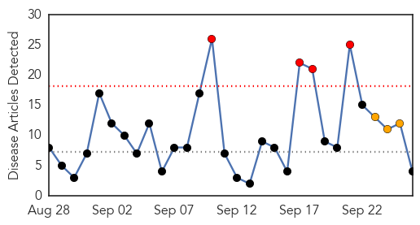
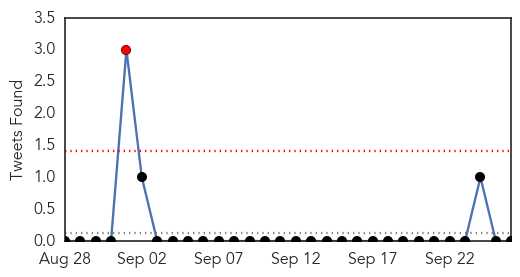
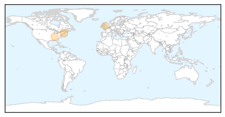

Influenza
30-Day Web Trend
4 alerts, 3 warnings

30-Day Twitter Trend
1 alerts, 0 warnings

Article Locations
Article Confidences
Top Articles:
Top Tweets:
-
No tweets found for Sep 26, 2015
West Nile Virus
30-Day Web Trend
0 alerts, 0 warnings

30-Day Twitter Trend
1 alerts, 0 warnings
Article Locations

Article Confidences
Top Articles:
- 0.989
- Oakland County woman who died of West Nile Virus identified
- 0.860
- Maine, New Hampshire have light mosquito year; Vermont mixed
- 0.833
- WNV Update: Five Human Cases of West Nile Virus Reported In Bridgeport, Shelton
- 0.791
- Vermont sees a mixed mosquito year
- 0.509
- State records its first West Nile death this season
Top Tweets:
-
No tweets found for Sep 26, 2015